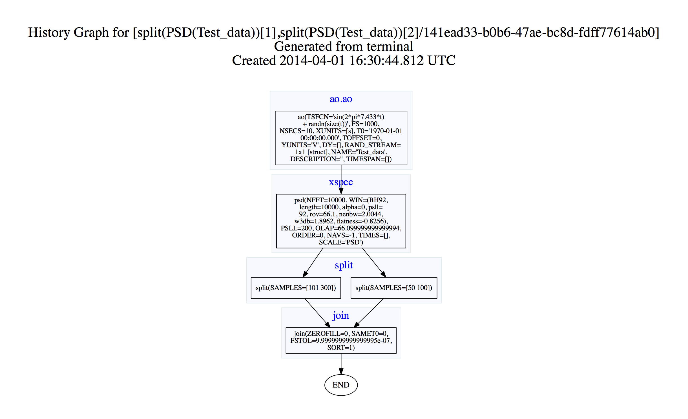

| LTPDA Toolbox™ | contents | |
You can split the data inside an AO to produce one or more output AOs. The ao/split method splits an AO by samples, times (if the AO contains time series data), frequencies (if the AO contains frequency data), intervals, or a number of pieces. We can control this as usual by defining our parameters. This is a very flexible method, so take your time and check all its possibilities.
Let us create a new time series AO for these examples.
pl = plist('name', 'None', 'nsecs', 10, 'fs', 1000, 'tsfcn', 'sin(2*pi*7.433*t) + randn(size(t))', 'yunits', 'V');
a = ao(pl);
For splitting in time we need to define a time vector for the parameter list and pass it to ao/split:
pl_time = plist('times', [2 3]);
a_time = split(a, pl_time);
iplot(a, a_time)
For this we need a frequency data AO. One easy way to get this is by computing the power spectrum using ao/psd.
axx = a.psd;
Again we need a vector for the parameter list and pass it to ao/split:
pl_freq = plist('frequencies', [10 100]);
axx_freq = split(axx, pl_freq);
iplot(axx, axx_freq)
We can also split the AO by passing a time interval to the ao/split method:
pl_interv = plist('start_time', 4, 'end_time', 6);
a_interv = split(a, pl_interv);
iplot(a, a_interv)
This type of splitting method we can use on any type of data. Let us use the frequency type, axx.
Again we need a vector for the parameter list and pass it to ao/split, only that this time we will split our AO in to two parts.
pl_samp = plist('samples', [50 100 101 300]);
[axx_samp1 axx_samp2] = split(axx, pl_samp)
iplot(axx, axx_samp1, axx_samp2)

Although in this example the two resulting AOs are contiguous, they need not to be.
We can join our two AOs back together using ao/join:
axx_join = join(axx_samp1, axx_samp2);
iplot(axx, axx_join)

If we look at the history for axx_join (by entering axx_join.viewHistory), we will see the following:
Since the two AOs that are output from the 'split by samples' stage are independent, the history tree reflects this, showing two independent branches leading to the join step.
| |
Select and find data from an AO | IFO/Temperature Example - Pre-processing | |
©LTP Team